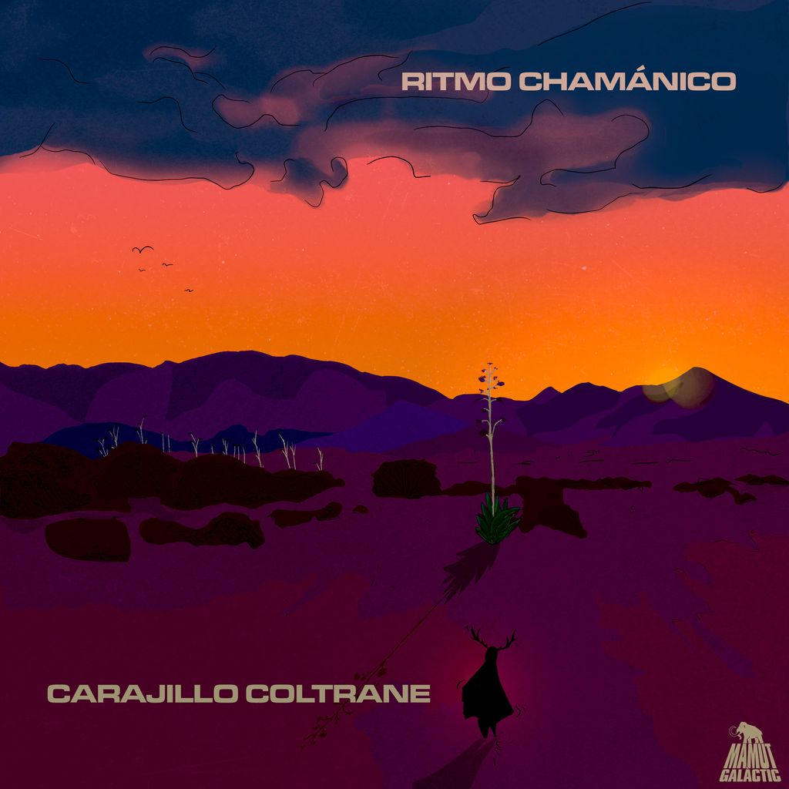

Segell de música barceloní que aposta per les músiques d'arrel: blues, cúmbia, latin… tot allò que ens fa ballar i reflexionar.
dance and fight
Segell de música barceloní que aposta per les músiques d'arrel: blues, cúmbia, latin… tot allò que ens fa ballar i reflexionar.

26.06.2026
Carajillo Coltrane torna a la càrrega: ja és aquí el videoclip de «Ritmo Chamánico», el seu nou single.
Veure a YouTube →
15.06.2026
Ja podeu gaudir del nou videoclip de Carajillo Coltrane, «Morocco Funk».
Veure a YouTube →